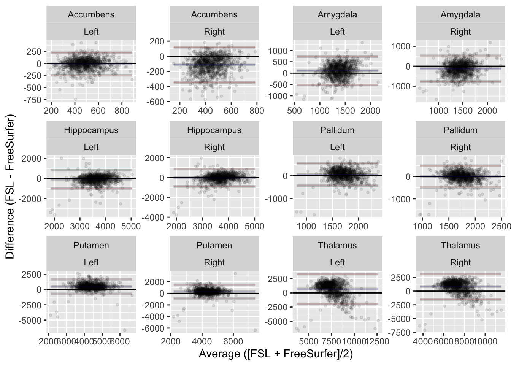

library(agree)
library(dplyr)
library(ggplot2)
library(irr)
library(purrr)
library(readr)
library(stringr)
library(tidyr)10 FSL Anat

The structural T1w scan in the A2CPS neuroimaging protocol is the source of several pre-specified biomarkers. Two of these biomarkers—the volumes of the hippocampi and amygdalae—are derived from a tool in the Functional Magnetic Resonance Imaging of the Brain (FMRIB) Software Library (FSL): FMRIB’s Integrated Registration and Segmentation Tool (FIRST).
Subcortical volumetric measurements are particularly important in pain research. The amygdala plays a critical role in the affective and emotional dimensions of pain processing, while the hippocampus is involved in memory consolidation and contextual fear conditioning associated with painful stimuli. Assessing the volume of these structures can help researchers understand structural adaptations to chronic pain.
The A2CPS pipeline calls FIRST as a part of the FSL standard pipeline for processing anatomical images (fsl_anat), which generates several outputs in addition to the biomarkers. This kit provides an overview of the outputs available from that pipeline.
10.1 Starting Project
10.1.1 Locate data
We assume that the data were downloaded from the NIMH Data Archive (NDA) as a Data Package and saved to data/nda inside the project folder (Appendix C describes what a package contains). Each NDA data structure is a table, <structure>.txt, and any files that the structure references are underneath <structure>/corral-secure/projects/A2CPS/products/consortium-data/pre-surgery. Paths in the text start from that folder, while code chunks spell out the full path from the project folder.
The fsl_anat derivatives are referenced by fmriresults01, underneath mris/derivatives/fslanat. This folder contains all of the outputs for every participant, with subject folders of the form sub-[recordid]_ses-[protocolid]_T1w.anat. Detailed descriptions of the outputs are available in the fsl_anat documentation.
Many users will not need the raw fsl_anat outputs and can instead rely a table in which the subcortical measures have been aggregated: fslanat.tsv. A data dictionary for this table is available in the fslanat.json file, and also online.
10.1.2 Extract data
In this kit, we will compare volumetric measurements that are produced by both FIRST and FreeSurfer (Chapter 12). In some circumstances, the volumes are largely interchangeable, but for some structures these tools are known to produce fairly different estimates of volume (Sadil & Lindquist, 2024). Let’s replicate part of that analysis.
Sadil, P., & Lindquist, M. A. (2024). Comparing automated subcortical volume estimation methods; amygdala volumes estimated by FSL and FreeSurfer have poor consistency. In Human Brain Mapping (No. 17; Vol. 45, p. e70027). https://doi.org/10.1002/hbm.70027
First, load in the cortical volumes provided by FSL.
# files referenced by fmriresults01 in the NDA package (see Locate Data)
fmriresults01 <- file.path(
"data/nda/fmriresults01",
"corral-secure/projects/A2CPS/products/consortium-data/pre-surgery"
)
fslanat <- read_tsv(
file.path(fmriresults01, "mris/derivatives/fslanat/fslanat.tsv"),
show_col_types = FALSE
)
head(fslanat)| Brain-Stem /4th Ventricle | Left-Accumbens-area | Left-Amygdala | Left-Caudate | Left-Hippocampus | Left-Pallidum | Left-Putamen | Left-Thalamus-Proper | Right-Accumbens-area | Right-Amygdala | Right-Caudate | Right-Hippocampus | Right-Pallidum | Right-Putamen | Right-Thalamus-Proper | t1_to_mni_scaling | t1_space_orig_volume | t1_space_mni_volume | sub | ses |
|---|---|---|---|---|---|---|---|---|---|---|---|---|---|---|---|---|---|---|---|
| 24714 | 582 | 1696 | 3631 | 3213 | 2040 | 4107 | 8117 | 426 | 1132 | 3634 | 3206 | 2016 | 4174 | 7751 | 0.514789 | 1051418 | 541258.4 | 20034 | V1 |
| 20177 | 497 | 1472 | 3309 | 3951 | 1681 | 4385 | 7400 | 365 | 1134 | 3305 | 3873 | 1746 | 4067 | 7390 | 0.515193 | 1030126 | 530713.7 | 10767 | V1 |
| 22711 | 609 | 1645 | 2822 | 4529 | 1705 | 4857 | 7520 | 308 | 1300 | 2876 | 4219 | 1598 | 4128 | 7253 | 0.710936 | 1015779 | 722153.9 | 20275 | V1 |
| 21246 | 394 | 1164 | 2863 | 2414 | 1620 | 4274 | 7011 | 409 | 1320 | 2833 | 3356 | 1561 | 3795 | 6830 | 0.968790 | 944113 | 914647.2 | 10292 | V1 |
| 24811 | 625 | 1366 | 3152 | 3429 | 1967 | 4824 | 8532 | 517 | 1545 | 3083 | 3569 | 1833 | 4551 | 7725 | 0.544569 | 1142600 | 622224.5 | 10826 | V1 |
| 24092 | 676 | 1616 | 2897 | 4227 | 1878 | 4573 | 9116 | 553 | 1416 | 3080 | 4447 | 1903 | 4665 | 9040 | 1.228005 | 1224947 | 1504241.0 | 20104 | V1 |
In addition to subcortical volumetric information, that table contains a few fields related to the overall size of the brain (t1_to_mni_scaling, t1_space_orig_volume, t1_space_mni_volume). Drop those fields. To make it easier to join with FreeSurfer values, we’ll also unpivot the table into a wider format, and extract information about the hemisphere.
subcort_fsl <- fslanat |>
select(-starts_with("t1_")) |>
pivot_longer(-c(sub, ses), values_to = "volume", names_to = "structure") |>
# too_many = "drop" keeps only the stem: FSL's "Left-Thalamus-Proper" and
# "Left-Accumbens-area" have to reduce to "Thalamus"/"Accumbens" to line up
# with the FreeSurfer names below. separate() did this via a suppressed warning.
separate_wider_delim(
structure,
delim = "-",
names = c("hemisphere", "structure"),
too_many = "drop"
)
head(subcort_fsl)| sub | ses | hemisphere | structure | volume |
|---|---|---|---|---|
| 20034 | V1 | Brain | Stem /4th Ventricle | 24714 |
| 20034 | V1 | Left | Accumbens | 582 |
| 20034 | V1 | Left | Amygdala | 1696 |
| 20034 | V1 | Left | Caudate | 3631 |
| 20034 | V1 | Left | Hippocampus | 3213 |
| 20034 | V1 | Left | Pallidum | 2040 |
Now, grab the equivalent information from FreeSurfer.
subcort_freesurfer <- read_tsv(
file.path(fmriresults01, "mris/derivatives/freesurfer/aseg.tsv"),
show_col_types = FALSE
) |>
filter(str_detect(
StructName,
"Thalamus|Putamen|Pallidum|Hippocampus|Amygdala|Accumbens"
)) |>
separate_wider_delim(
StructName,
delim = "-",
names = c("hemisphere", "structure"),
too_many = "drop"
) |>
select(volume = Volume_mm3, hemisphere, structure, sub, ses)The tables may now be combined. Note that, while combining them, we add an additional column to keep track of which method produced the volume.
subcort <- bind_rows(
list(fsl = subcort_fsl, freesurfer = subcort_freesurfer),
.id = "method"
) |>
pivot_wider(names_from = method, values_from = volume) |>
drop_na() # not every structure is available in both methods, and not every participant has been processed by both pipelines
# check which structures we have available
subcort |> distinct(structure)| structure |
|---|
| Accumbens |
| Amygdala |
| Hippocampus |
| Pallidum |
| Putamen |
| Thalamus |
To compare the structures, make a simple Bland-Altman plot.
subcort |>
mutate(Average = (fsl + freesurfer) / 2, Difference = fsl - freesurfer) |>
ggplot(aes(x = Average, y = Difference)) +
facet_wrap(~ structure + hemisphere, scales = "free") +
geom_point(alpha = 0.1, shape = 20) +
geom_hline(yintercept = 0) +
geom_ba() +
labs(
x = "Average ([FSL + FreeSurfer]/2)",
y = "Difference (FSL - FreeSurfer)"
)
As expected, there are overall differences in how the estimates provided by the two structures Figure 10.1. We can quantify these differences using the intraclass correlation coefficient.
McGraw, K. O., & Wong, S. P. (1996). Forming inferences about some intraclass correlation coefficients. Psychological Methods, 1(1), 30. https://doi.org/10.1037/1082-989X.1.1.30
subcort |>
group_nest(hemisphere, structure) |>
mutate(
fit = map(
data,
\(x) {
icc(
cbind(x$fsl, x$freesurfer),
model = "twoway",
type = "consistency",
unit = "single"
)
}
),
estimate = map_dbl(fit, pluck, "value"),
lower = map_dbl(fit, pluck, "lbound"),
upper = map_dbl(fit, pluck, "ubound")
) |>
select(-data, -fit) |>
arrange(structure, hemisphere)| hemisphere | structure | estimate | lower | upper |
|---|---|---|---|---|
| Left | Accumbens | 0.5545339 | 0.5099570 | 0.5961404 |
| Right | Accumbens | 0.4525440 | 0.4016893 | 0.5006163 |
| Left | Amygdala | 0.1712640 | 0.1102848 | 0.2309586 |
| Right | Amygdala | 0.2097839 | 0.1495811 | 0.2684369 |
| Left | Hippocampus | 0.5341598 | 0.4882153 | 0.5771516 |
| Right | Hippocampus | 0.5844969 | 0.5420350 | 0.6239818 |
| Left | Pallidum | 0.4685240 | 0.4185594 | 0.5156609 |
| Right | Pallidum | 0.4980915 | 0.4498653 | 0.5434214 |
| Left | Putamen | 0.5330968 | 0.4870825 | 0.5761597 |
| Right | Putamen | 0.5511217 | 0.5063117 | 0.5929634 |
| Left | Thalamus | 0.3977454 | 0.3440988 | 0.4488036 |
| Right | Thalamus | 0.4593056 | 0.4088233 | 0.5069856 |
10.2 Considerations While Working on the Project
10.2.1 Variability Across Scanners
Many MRI biomarkers exhibit variability across the scanners, which may confound some analyses. For an up-to-date assessment of the issue and overview of current thinking, please see Appendix D.
10.2.2 Data Quality
As with any MRI derivative, all pipeline derivatives have been included. This means that products were included regardless of their quality, and so some products may have been generated from images that are known to have poor quality—rated “red”, or incomparable. For details on the ratings and how to exclude them, see Appendix A. Additionally, extensive QC has not yet been performed on the derivatives themselves, and so there may be cases where pipelines produced atypical outputs. For an overview of planned checks, see Confluence.
10.2.3 Data Generation (Methods)
For a subset of participants, the standard fsl_anat pipeline needed to be modified.
10.2.3.1 Field-of-View Estimation in UC
An early step in this pipeline involves estimating the field-of-view and cropping the image to a standard size. The cropping is done with the FSL tool robustfov, which uses a heuristic to first identify the most superior slice that could include the skull, uses a pre-specified distance in mm to select an inferior slice that is expected to be below the cerebellum, and crops everything outside of those slices. The heuristic is based on the quantiles of intensity values, but this heuristic was observed to often fail for data collected with SENSE.
To accommodate scans that failed for this reason, a small amount of noise was added to the entire image, and then the field-of-view was estimated on this degraded image. The field-of-view was then applied to the original image, and that cropped image was provided to fsl_anat (with automated cropping disabled). This workaround was recommended by Mark Jenkinson on the FSL Archives, and it was applied to these subjects.
10.2.3.2 High-Intensity Voxels
A subset of cases exhibited poor alignment to the standard space, with the misalignment driven by high-intensity voxels from outside of the brain. The extreme intensity values may have been driven by relatively high proportions of fatty tissue. For cases where these failures were identified, a mask was generated from the top 1% of voxels, which was then visually inspected to confirm that it did not include any voxels in the brain. That mask was then provided to fsl_anat as a “lesion” mask (via a hidden option), resulting in those voxels being ignored during alignment. In instances where the mask included brain voxels, the fsl_anat results were not included. The list of participants this fix was applied to is here.
10.2.4 Citations
The fsl_anat pipeline relies on several tools that are the products of research by the FMRIB team. If you use these derivatives in your analyses, please follow the instructions for citations here: https://fsl.fmrib.ox.ac.uk/fsl/docs/index.html.
In publications or presentations including data from A2CPS, please include the following statement as attribution:
Data were provided (in part) by the A2CPS Consortium funded by the National Institutes of Health (NIH) Common Fund, which is managed by the Office of the Director (OD)/Office of Strategic Coordination (OSC). Consortium components and their associated funding sources include Clinical Coordinating Center (U24NS112873), Data Integration and Resource Center (U54DA049110), Omics Data Generation Centers (U54DA049116, U54DA049115, U54DA049113), Multi-site Clinical Center 1 (MCC1) (UM1NS112874), and Multi-site Clinical Center 2 (MCC2) (UM1NS118922).
Note
Berardi, G., Frey-Law, L., Sluka, K. A., Bayman, E. O., Coffey, C. S., Ecklund, D., Vance, C. G. T., Dailey, D. L., Burns, J., Buvanendran, A., McCarthy, R. J., Jacobs, J., Zhou, X. J., Wixson, R., Balach, T., Brummett, C. M., Clauw, D., Colquhoun, D., Harte, S. E., … Wandner, L. D. (2022). Multi-site observational study to assess biomarkers for susceptibility or resilience to chronic pain: The acute to chronic pain signatures (A2CPS) study protocol. Frontiers in Medicine, 9. https://doi.org/10.3389/fmed.2022.849214
Sluka, K. A., Wager, T. D., Sutherland, S. P., Labosky, P. A., Balach, T., Bayman, E. O., Berardi, G., Brummett, C. M., Burns, J., Buvanendran, A., et al. (2023). Predicting chronic postsurgical pain: Current evidence and a novel program to develop predictive biomarker signatures. Pain, 164(9), 1912–1926. https://doi.org/10.1097/j.pain.0000000000002938
Sadil, P., Arfanakis, K., Bhuiyan, E. H., Caffo, B., Calhoun, V. D., Clauw, D. J., DeLano, M. C., Ford, J. C., Gattu, R., Guo, X., Harris, R. E., Ichesco, E., Johnson, M. A., Jung, H., Kahn, A. B., Kaplan, C. M., Leloudas, N., Lindquist, M. A., Luo, Q., … Chronic Pain Signatures Consortium, T. A. to. (2024). Image processing in the acute to chronic pain signatures (A2CPS) project. bioRxiv. https://doi.org/10.1101/2024.12.19.627509
When using neuroimaging derivatives, please also cite Sadil et al. (2024).